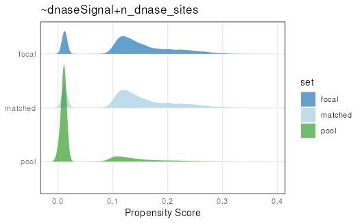
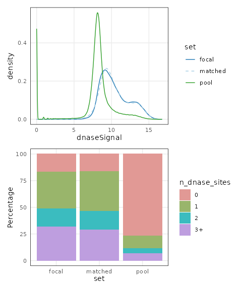
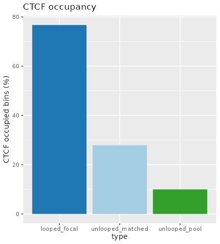

vignettes/matching_granges.Rmd
matching_granges.RmdIn this vignette we demonstrate generating covariate-matched,
null-hypothesis GRanges using the matchRanges() function to
test for the occupancy of CCCTC-binding factor (CTCF) at chromatin loop
anchors.
One of the fundamental principles of chromatin-looping suggests that most loops are bound at both ends by the CTCF transcription factor (TF). CTCF-bound loops can be formed by loop-extrusion, where the ring-like cohesin complex extrudes chromatin until stopped by bound CTCF. By this mechanism, we expect most loop anchors will be bound by CTCF.
While we could test this hypothesis by simple overlap or permutation
testing, these approaches fail to account for non-uniformly distributed
covariate genomic features. For example, loop anchors are commonly bound
by CTCF and located in open chromatin regions. We can use
matchRanges() to test for CTCF occupancy at loop anchors
controlling for open chromatin regions.
Here, we generate a set of null-hypothesis GRanges to more rigorously
test CTCF occupancy at loop anchors independently from open chromatin
regions. We use the hg19_10kb_bins dataset from the
nullrangesData package, which contains ranges for every
10Kb bin along the genome with CTCF, DNase, and loop feature annotations
from GM12878 (see ?nullrangesData::hg19_10kb_bins).
matchRanges()
Before we generate our null ranges, let’s take a look at our example dataset:
library(nullrangesData)
## Load example data
bins <- hg19_10kb_bins()
bins## GRanges object with 303641 ranges and 5 metadata columns:
## seqnames ranges strand | n_ctcf_sites ctcfSignal
## <Rle> <IRanges> <Rle> | <numeric> <numeric>
## [1] chr1 1-10000 * | 0 0
## [2] chr1 10001-20000 * | 0 0
## [3] chr1 20001-30000 * | 0 0
## [4] chr1 30001-40000 * | 0 0
## [5] chr1 40001-50000 * | 0 0
## ... ... ... ... . ... ...
## [303637] chrX 155230001-155240000 * | 0 0.00000
## [303638] chrX 155240001-155250000 * | 0 0.00000
## [303639] chrX 155250001-155260000 * | 1 4.09522
## [303640] chrX 155260001-155270000 * | 0 0.00000
## [303641] chrX 155270001-155270560 * | 0 0.00000
## n_dnase_sites dnaseSignal looped
## <factor> <numeric> <logical>
## [1] 0 0.00000 FALSE
## [2] 0 5.03572 FALSE
## [3] 0 0.00000 FALSE
## [4] 0 0.00000 FALSE
## [5] 0 0.00000 FALSE
## ... ... ... ...
## [303637] 0 8.42068 FALSE
## [303638] 0 4.08961 FALSE
## [303639] 0 6.00443 FALSE
## [303640] 0 8.07179 FALSE
## [303641] 0 0.00000 FALSE
## -------
## seqinfo: 23 sequences from hg19 genomematchRanges() works by selecting a set of
covariate-matched controls from a pool of options based on an input
focal set of interest. Here, we define focal as bins that
contain a loop anchor, pool as bins that don’t contain a
loop anchor, and covar as DNase signal and number of DNase
sites per bin:
library(nullranges)
## Match ranges
set.seed(123)
mgr <- matchRanges(focal = bins[bins$looped],
pool = bins[!bins$looped],
covar = ~dnaseSignal + n_dnase_sites)
mgr## MatchedGRanges object with 13979 ranges and 5 metadata columns:
## seqnames ranges strand | n_ctcf_sites ctcfSignal
## <Rle> <IRanges> <Rle> | <numeric> <numeric>
## [1] chr10 25240001-25250000 * | 1 5.06009
## [2] chr2 192860001-192870000 * | 0 0.00000
## [3] chr10 90060001-90070000 * | 0 0.00000
## [4] chr7 3840001-3850000 * | 0 0.00000
## [5] chr14 77370001-77380000 * | 1 7.66659
## ... ... ... ... . ... ...
## [13975] chr1 154910001-154920000 * | 2 7.70130
## [13976] chr4 185960001-185970000 * | 1 7.13074
## [13977] chr1 236080001-236090000 * | 0 0.00000
## [13978] chr5 35290001-35300000 * | 0 0.00000
## [13979] chr11 119300001-119310000 * | 0 0.00000
## n_dnase_sites dnaseSignal looped
## <factor> <numeric> <logical>
## [1] 3+ 12.33182 FALSE
## [2] 1 10.80692 FALSE
## [3] 1 8.56733 FALSE
## [4] 0 7.96488 FALSE
## [5] 3+ 13.38591 FALSE
## ... ... ... ...
## [13975] 3+ 13.99531 FALSE
## [13976] 1 9.63596 FALSE
## [13977] 3+ 11.32430 FALSE
## [13978] 1 9.57321 FALSE
## [13979] 1 8.58206 FALSE
## -------
## seqinfo: 23 sequences from hg19 genomeWhen the focal and pool arguments are GRanges objects,
matchRanges() returns a MatchedGRanges object.
The MatchedGRanges class extends GRanges, so
all of the same operations can be applied:
library(GenomicRanges)
library(plyranges)
library(ggplot2)
## Summarize ctcfSignal by n_ctcf_sites
mgr %>%
group_by(n_ctcf_sites) %>%
summarize(ctcfSignal = mean(ctcfSignal)) %>%
as.data.frame() %>%
ggplot(aes(x = n_ctcf_sites, y = ctcfSignal)) +
geom_line() +
geom_point(shape = 21, stroke = 1, fill = 'white') +
theme_minimal() +
theme(panel.border = element_rect(color = 'black',
fill = NA))
Here, we utilize the plyranges
package which provides a set of “tidy” verbs for manipulating
genomic ranges for a seamless and integrated genomic analysis
workflow.
We can get a quick summary of the matching quality with
overview():
overview(mgr)## MatchedGRanges object:
## set N dnaseSignal.mean dnaseSignal.sd n_dnase_sites.0
## focal 13979 10.0 1.9 2341
## matched 13979 10.0 1.9 2340
## pool 289662 7.9 2.7 222164
## unmatched 277229 7.8 2.7 219844
## n_dnase_sites.1 n_dnase_sites.2 n_dnase_sites.3+ ps.mean ps.sd
## 4829 2353 4456 0.130 0.072
## 5146 2447 4046 0.130 0.072
## 34826 13627 19045 0.042 0.061
## 30269 11504 15612 0.038 0.058
## --------
## focal - matched:
## dnaseSignal.mean dnaseSignal.sd n_dnase_sites.0 n_dnase_sites.1
## 0.013 0.0085 1 -320
## n_dnase_sites.2 n_dnase_sites.3+ ps.mean ps.sd
## -94 410 3.9e-07 1.1e-06For continuous covariates (such as dnaseSignal),
overview() shows the mean and standard deviation between
each matched set. For categorical covariates, such as
n_dnase_sites, overview() reports the number
of observations per category and matched set. The bottom section shows
the mean and s.d (or n, for factors) difference between focal and
matched sets.
overview() also summarizes the propensity scores for
each set to give a quick idea of overall matching quality.
Let’s visualize overall matching quality by plotting propensity scores for the focal, pool, and matched sets:
plotPropensity(mgr, sets = c('f', 'p', 'm'), type = 'ridges')
From this plot, it is clear that the matched set is much closer to the focal set than the pool set.
We can ensure that covariate distributions have been matched
appropriately by using the covariates() function to extract
matched covariates along with patchwork and
plotCovarite to visualize all distributions:
library(patchwork)
plots <- lapply(covariates(mgr), plotCovariate, x=mgr, sets = c('f', 'm', 'p'))
Reduce('/', plots)
Using our matched ranges, we can compare CTCF occupancy in bins that
1) contain a loop anchor (i.e. looped), 2) don’t contain a loop anchor
(i.e. unlooped), or 3) don’t contain a loop anchor, but are also matched
for the strength and number of DNase sites (i.e. matched). In this case,
we calculate CTCF occupancy as the percent of bins that contain CTCF
among our 3 sets by using the focal() and
pool() accessor functions.
In order to pipe the data into plyranges, we bind the ranges together and give each group a meaningful label in this scientific context (e.g. that the focal set is looped, while the background/matched sets are unlooped).
tidy_gr <- bind_ranges(
looped_focal=focal(mgr),
unlooped_pool=pool(mgr),
unlooped_matched=mgr, .id="type"
)We define some custom colors for our barplot:
cols <- c(looped_focal="#1F78B4",
unlooped_matched="#A6CEE3",
unlooped_pool="#33A02C")And finally we can make the plot, with a grouped summarization followed by some ggplot2 code:
tidy_gr %>%
group_by(type) %>%
summarize(CTCF_occupied = 100*mean(n_ctcf_sites >= 1)) %>%
as.data.frame() %>%
ggplot(aes(type, CTCF_occupied, fill=type)) +
geom_col(show.legend = FALSE) +
ylab("CTCF occupied bins (%)") +
scale_fill_manual(values=cols) +
ggtitle("CTCF occupancy")
## R version 4.3.0 (2023-04-21)
## Platform: x86_64-pc-linux-gnu (64-bit)
## Running under: Ubuntu 22.04.2 LTS
##
## Matrix products: default
## BLAS: /usr/lib/x86_64-linux-gnu/openblas-pthread/libblas.so.3
## LAPACK: /usr/lib/x86_64-linux-gnu/openblas-pthread/libopenblasp-r0.3.20.so; LAPACK version 3.10.0
##
## locale:
## [1] LC_CTYPE=en_US.UTF-8 LC_NUMERIC=C
## [3] LC_TIME=en_US.UTF-8 LC_COLLATE=en_US.UTF-8
## [5] LC_MONETARY=en_US.UTF-8 LC_MESSAGES=en_US.UTF-8
## [7] LC_PAPER=en_US.UTF-8 LC_NAME=C
## [9] LC_ADDRESS=C LC_TELEPHONE=C
## [11] LC_MEASUREMENT=en_US.UTF-8 LC_IDENTIFICATION=C
##
## time zone: UTC
## tzcode source: system (glibc)
##
## attached base packages:
## [1] stats4 stats graphics grDevices utils datasets methods
## [8] base
##
## other attached packages:
## [1] patchwork_1.1.2 ggplot2_3.4.2
## [3] plyranges_1.20.0 nullranges_1.7.9
## [5] nullrangesData_1.6.0 InteractionSet_1.28.1
## [7] SummarizedExperiment_1.30.2 Biobase_2.60.0
## [9] MatrixGenerics_1.12.3 matrixStats_1.0.0
## [11] GenomicRanges_1.52.0 GenomeInfoDb_1.36.1
## [13] IRanges_2.34.1 S4Vectors_0.38.1
## [15] ExperimentHub_2.8.1 AnnotationHub_3.8.0
## [17] BiocFileCache_2.8.0 dbplyr_2.3.3
## [19] BiocGenerics_0.46.0
##
## loaded via a namespace (and not attached):
## [1] DBI_1.1.3 bitops_1.0-7
## [3] rlang_1.1.1 magrittr_2.0.3
## [5] ggridges_0.5.4 compiler_4.3.0
## [7] RSQLite_2.3.1 png_0.1-8
## [9] systemfonts_1.0.4 vctrs_0.6.3
## [11] stringr_1.5.0 pkgconfig_2.0.3
## [13] crayon_1.5.2 fastmap_1.1.1
## [15] XVector_0.40.0 ellipsis_0.3.2
## [17] labeling_0.4.2 utf8_1.2.3
## [19] Rsamtools_2.16.0 promises_1.2.0.1
## [21] rmarkdown_2.23 ragg_1.2.5
## [23] purrr_1.0.1 bit_4.0.5
## [25] xfun_0.39 zlibbioc_1.46.0
## [27] cachem_1.0.8 jsonlite_1.8.7
## [29] blob_1.2.4 highr_0.10
## [31] later_1.3.1 DelayedArray_0.26.7
## [33] BiocParallel_1.34.2 interactiveDisplayBase_1.38.0
## [35] parallel_4.3.0 R6_2.5.1
## [37] bslib_0.5.0 stringi_1.7.12
## [39] rtracklayer_1.60.0 jquerylib_0.1.4
## [41] Rcpp_1.0.11 knitr_1.43
## [43] httpuv_1.6.11 Matrix_1.6-0
## [45] tidyselect_1.2.0 abind_1.4-5
## [47] yaml_2.3.7 codetools_0.2-19
## [49] curl_5.0.1 lattice_0.21-8
## [51] tibble_3.2.1 shiny_1.7.4.1
## [53] withr_2.5.0 KEGGREST_1.40.0
## [55] evaluate_0.21 desc_1.4.2
## [57] Biostrings_2.68.1 pillar_1.9.0
## [59] BiocManager_1.30.21.1 filelock_1.0.2
## [61] generics_0.1.3 rprojroot_2.0.3
## [63] RCurl_1.98-1.12 BiocVersion_3.17.1
## [65] munsell_0.5.0 scales_1.2.1
## [67] xtable_1.8-4 glue_1.6.2
## [69] tools_4.3.0 BiocIO_1.10.0
## [71] data.table_1.14.8 GenomicAlignments_1.36.0
## [73] XML_3.99-0.14 fs_1.6.3
## [75] grid_4.3.0 AnnotationDbi_1.62.2
## [77] colorspace_2.1-0 GenomeInfoDbData_1.2.10
## [79] restfulr_0.0.15 cli_3.6.1
## [81] rappdirs_0.3.3 textshaping_0.3.6
## [83] fansi_1.0.4 S4Arrays_1.0.5
## [85] dplyr_1.1.2 gtable_0.3.3
## [87] sass_0.4.7 digest_0.6.33
## [89] farver_2.1.1 rjson_0.2.21
## [91] memoise_2.0.1 htmltools_0.5.5
## [93] pkgdown_2.0.7 lifecycle_1.0.3
## [95] httr_1.4.6 mime_0.12
## [97] bit64_4.0.5